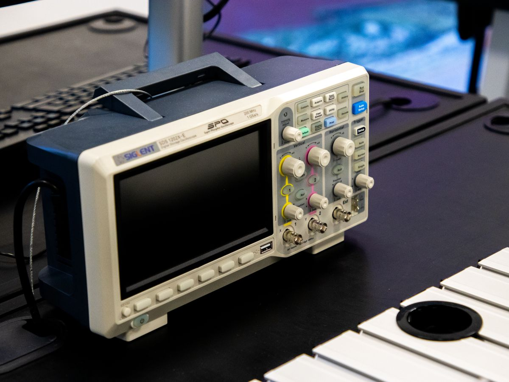
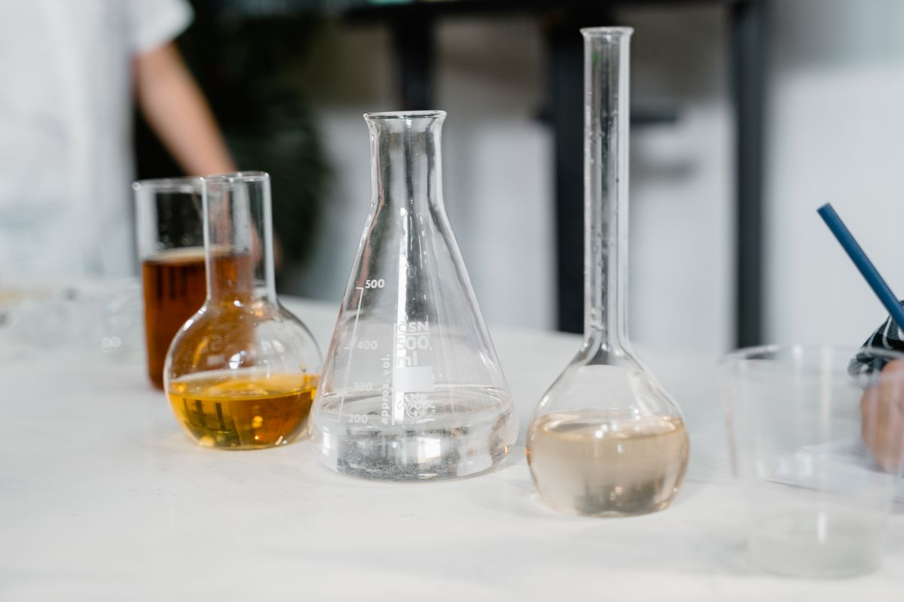

Physics Laboratory
Explore measurement, mechanics, electricity and core physical principles through practical work.
A.D.B. Campus
A focused, student-centred environment for classes, practical learning, reading, mentoring, culture and sport.


Academic guidance, career direction, skill development and well-being support.
Laboratory learning
Dedicated subject spaces strengthen observation, experimentation and scientific thinking.

Explore measurement, mechanics, electricity and core physical principles through practical work.

Develop safe technique, careful observation and strong links between theory and reaction.
Study living systems through specimens, microscopy and guided investigation.
Regular participation supports fitness, teamwork, resilience and a balanced student life.
Events give learners a platform to communicate, perform and celebrate creativity.
Guidance, communication practice and competitive preparation help students plan with confidence.
Come experience it